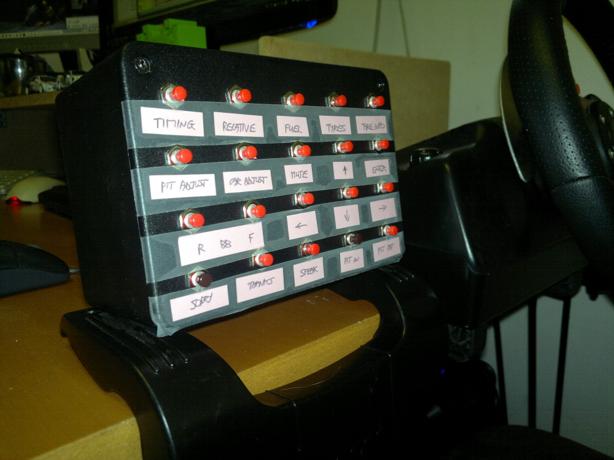

Arduino USB Button Box
As an iRacing beginner I quickly got bored with trying to find and press a particular key on the keyboard during a race which usually results in me crashing. To help with this I thought I would put together an Arduino based button box where the buttons should hopefully fall more easily to hand.
As with some of my other projects, I chose to use an Arduino Leonardo due to the built-in USB Human Interface Device (HID) capabilities. I bought a plastic enclosure and some cheap buttons from Ebay which aren't brilliant so my recommendation is to buy better quality buttons. I used a bracket taken from an old wheel to mount the box to my desk.
Wiring a button matrix can get quite complicated especially if you need to handle multiple button presses at the same time. Fortunately, for this application, I only need to press one button at a time. Therefore I decided to use a simple multiplexing approach as described by Dan Nixon in his blog. This approach does not require any diodes or additional IC's.
See how this is wired on the Fritzing circuit diagram to the right. You will probably need to modify the Arduino sketch to send the button presses that your application is expecting. In the sketch I have included a list of the codes that need to be sent to simulate various button presses.
I am currently experimenting with using different buttons for different game functions so hence the temporary labels which I will replace with something more permanent in due course
My Arduino sketch is available to download from GitHub. See the Arduino Getting Started pages if you are new to Arduino.


Return to home page.